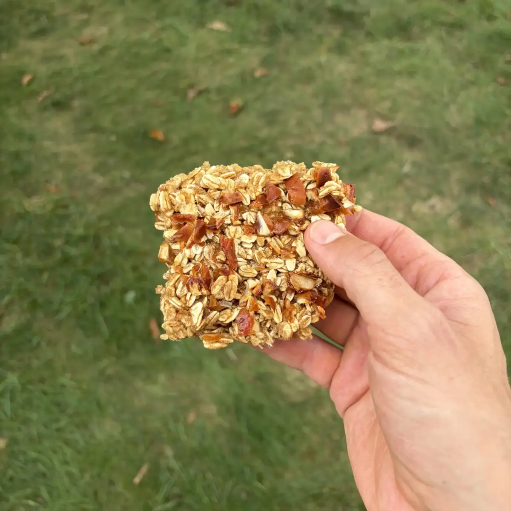
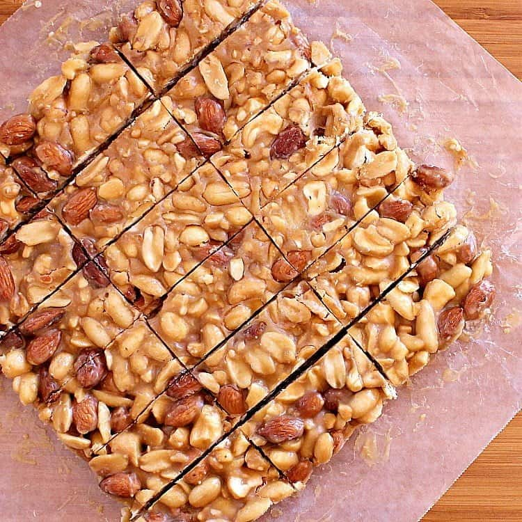
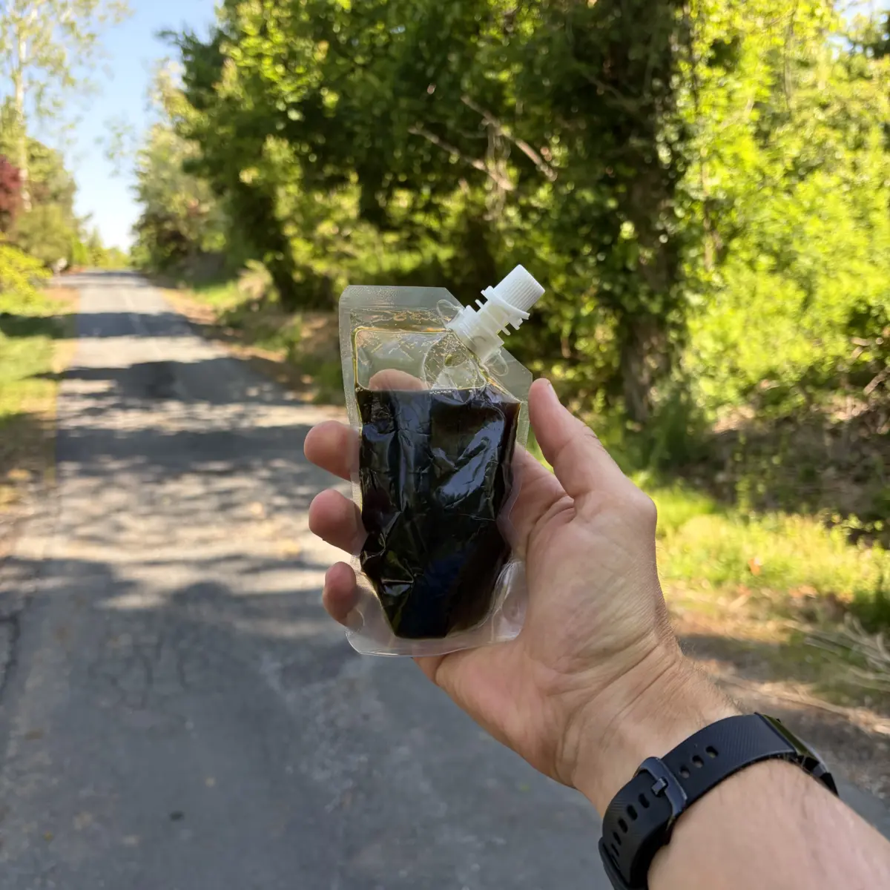
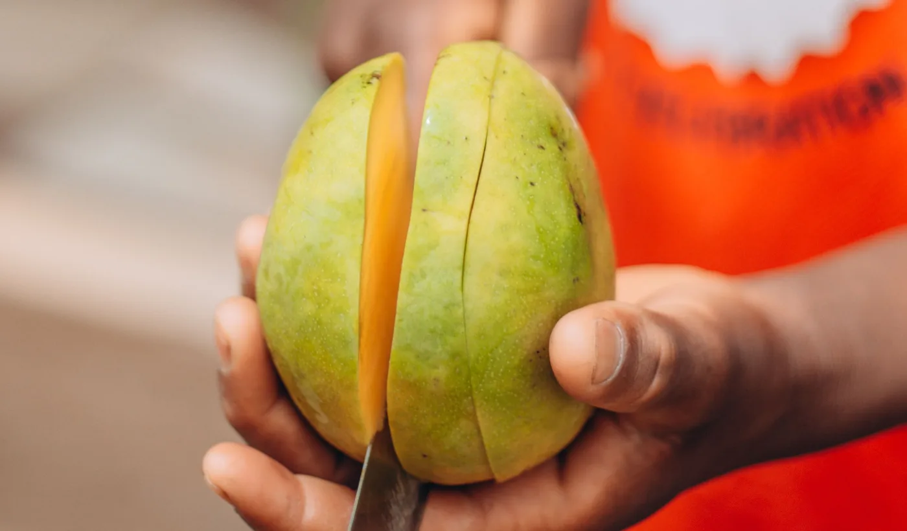
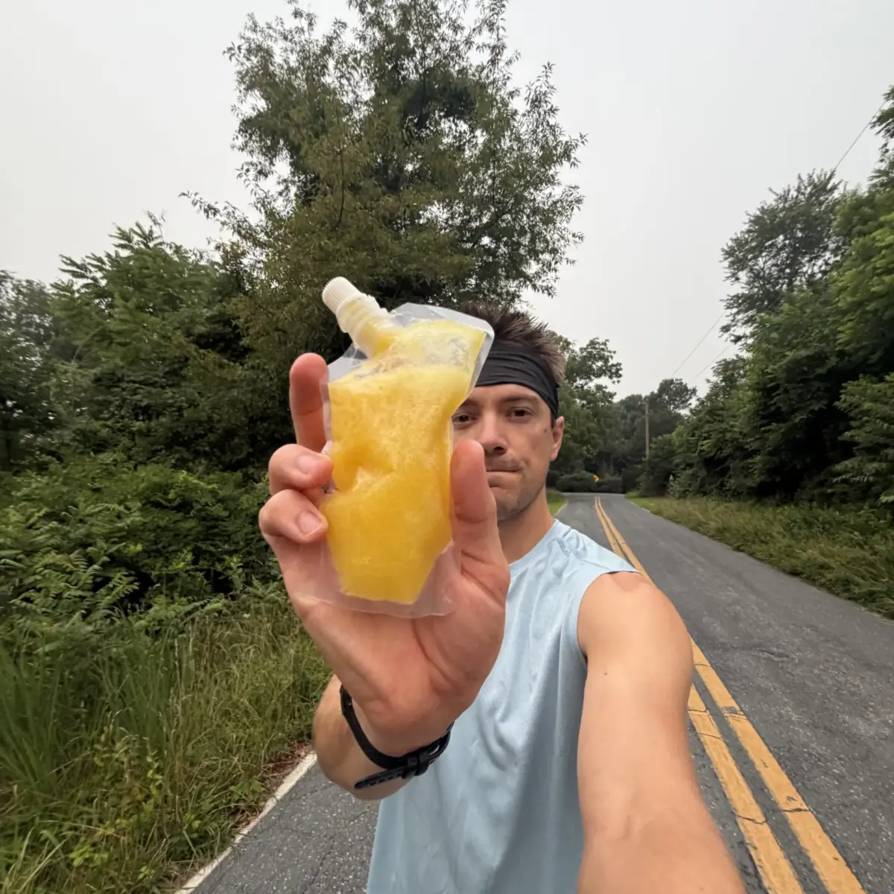

High Carb Energy Balls
Makes 10 balls — 10 deglet noor dates, Rolled oats, Maple sugar, Vanilla extract.

Maple Cinnamon Oat Recovery Bars
Makes 6 bars — Rolled oats, Banana, Maple syrup, Raw honey.

Savory Potato Cakes
Makes 4 cakes — White potato, Maple syrup, Lemon juice, Pinch of salt.

Sweet Potato Oat Bars
Makes 8 bars — Boiled sweet potato, Rolled oats, 1 banana, Maple syrup.

Low Carb Nut Bars
Peanuts, cashews and almonds in a warm peanut-butter mix, frozen and cut. About 4g net carbs a bar.

No-Bake Keto Granola Bars
Almonds and coconut flakes in golden syrup, sugar-free chocolate melted over the top. 3g net carbs a bar.

5-Ingredient Protein Bars (No-Bake)
Five ingredients: peanut butter, maple syrup, whey protein, oats. 14g protein a bar.

Protein Bars (Low Carb & Sugar Free)
Hazelnuts, almond flour, cocoa, collagen — pressed and chilled. Lowest carb in the box: 2.3g net a bar.

Keto Granola Bars with Coconut
The coconut bar he asked for: coconut inside, coconut oil binding, almonds and pumpkin seeds, chocolate drizzle.

Keto Chocolate Protein Bars (Nut Free)
The nut-free bar: sunflower seeds and seed butter, chocolate protein powder, cocoa.

Apple Date Energy Gel
Makes 1 gel — 5 deglet noor dates, Apple juice, Maple syrup, Pinch of salt.

Beet & Honey Gel
Makes 2 gels — Pure beet juice, Raw honey, Maple syrup, 1-2 pinches of salt.

Grape Molasses Energy Gel
Makes 1 gel — Grape juice, Maple syrup, Raw honey, Molasses.

Mango Gel
Makes 2 gels — Frozen mango, Maple syrup, Coconut water, Pinch of salt.

Orange Maple Honey Gel
Makes 1 gel — Orange juice, Raw honey, Maple syrup.

Pineapple Gel
Makes 3 gels — Pineapple, Maple syrup, Raw honey, Splash of coconut water or regular water.

Watermelon Gel
Makes 2 gels — Watermelon, Raw honey, Pinch of salt.

Natural Electrolyte Drink
Makes 12 oz drink — Coconut water, Maple sugar, Lemon juice, Pinch of salt.